El precio del carburante en Suecia es casi el mismo aunque la distancia entre dos gasolineras sea de más de 1.000 kilómetros.
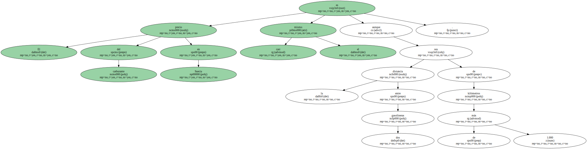Hoy se paga a 9,15 coronas el litro ( 174 pesetas ) y " menos mal que ha bajado " , dice con resignación un conductor sueco mientras trata de llenar el depósito de su Volvo S40 en una gasolinera de Malmoe , al sur del país.
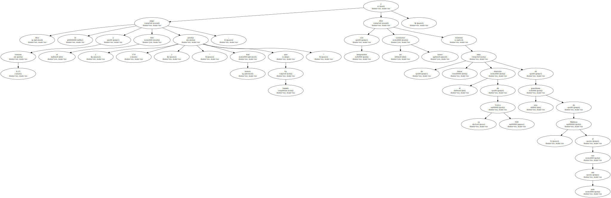Lo que no sabe es que posiblemente lo que está metiendo en el depósito de su coche no sea gasolina pura sino gasolina que contiene un 5% de etanol.
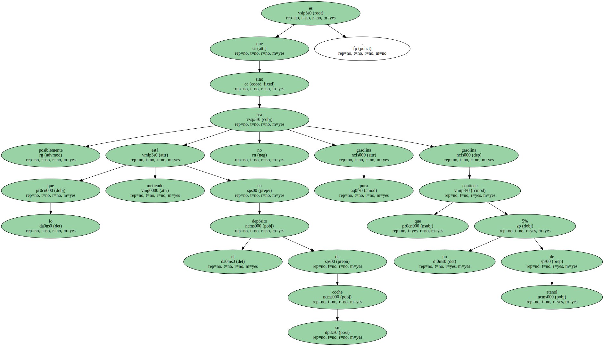Este nuevo y dudoso método de las empresas de carburantes para obtener ganancias sin bajar el precio ha hecho reaccionar otra vez a las instituciones del Estado que defienden al consumidor.
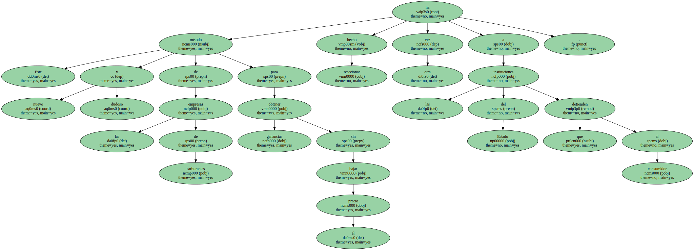La situación es equiparable a lo ocurrido en otros países europeos , incluido España , en que ha habido sanciones contra petroleras por restringir la competencia.
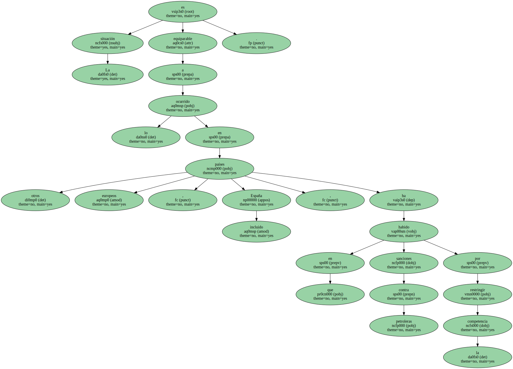Sea cual sea la marca del combustible , en Suecia los precios no varían y las sospechas de la existencia de acuerdos entre las gasolineras es un hecho probado.
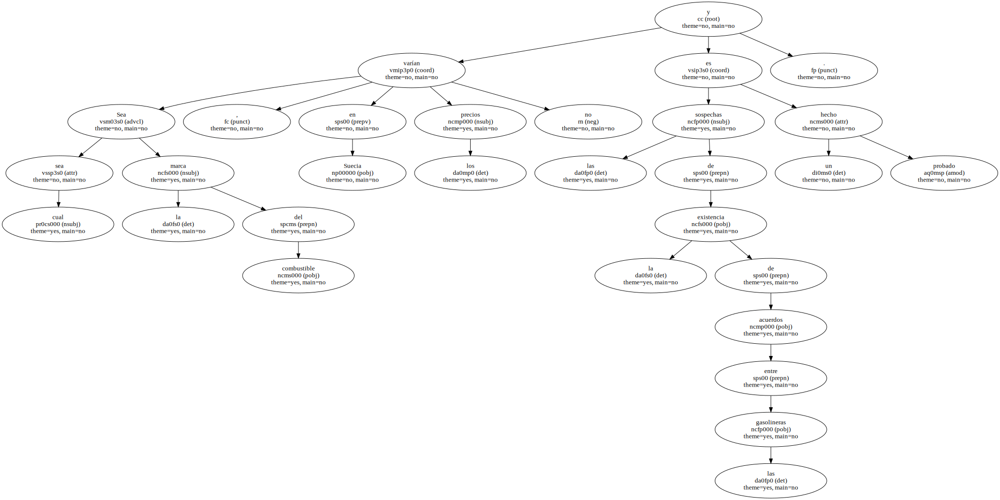Aparecieron por primera vez en diciembre de 1999 y , a partir de esa fecha , las denuncias y las nuevas sospechas se han sucedido casi continuamente.
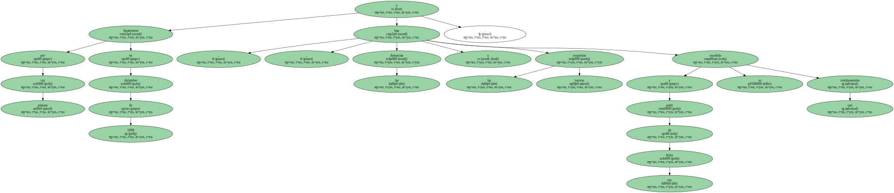Para la Oficina Estatal de Control de la Competencia que investigó el asunto , las informaciones que obtuvieron eran muy concretas y , por tanto , la investigación llevó a la entidad a demandar a los cinco mayores proveedores de carburantes suecos ( OK-Q8 , Shell , Hydro , Statoil y Preem ) por una cantidad de 740 millones de coronas ( más de 14.000 millones de pesetas ).
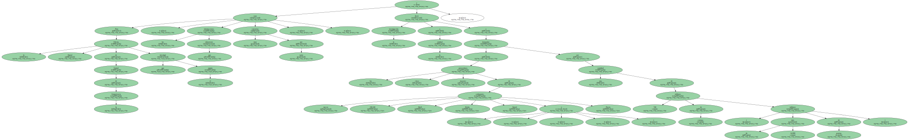Sin embargo , ahí no terminaron los acuerdos entre las empresas.
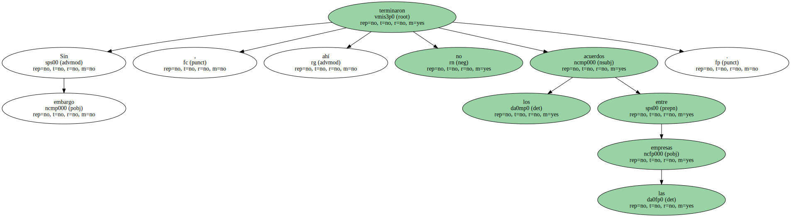En noviembre del 2000 se inició una nueva investigación ante la nueva sospecha de la existencia de un pacto secreto en los precios del gasóleo.

" Hay informes que indican que esto ocurría el verano pasado y por eso debemos seguir investigando a estas empresas " , dijo Thomas Wallander , de la Oficina de Control de la Competencia.
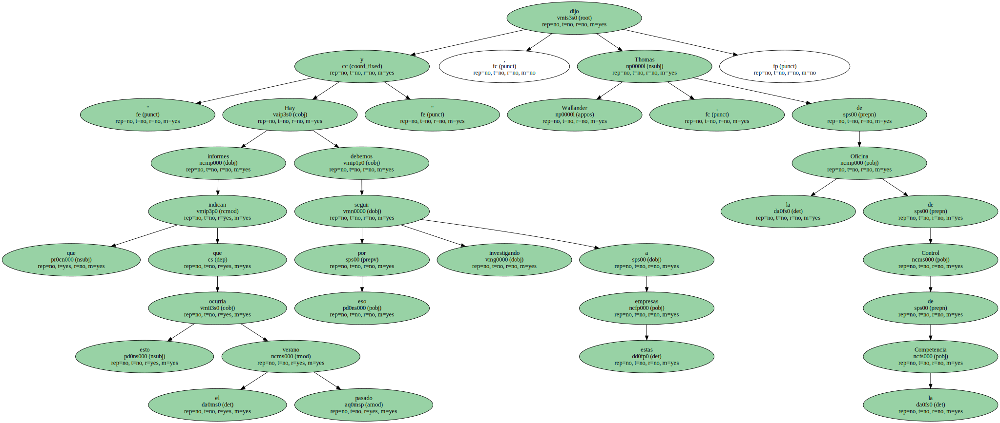Wallander no quiso dar detalles de la situación actual y dijo al periódico sueco Aftonbladet que está preocupado por la evolución de los múltiples casos.
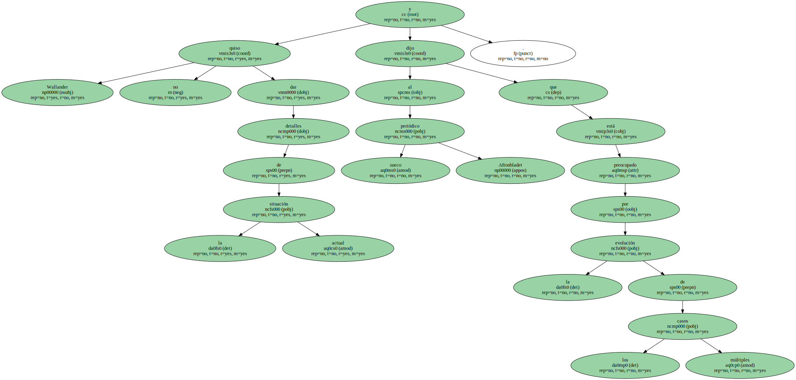Tampoco quiso revelar los nombres de las empresas que están siendo investigadas.
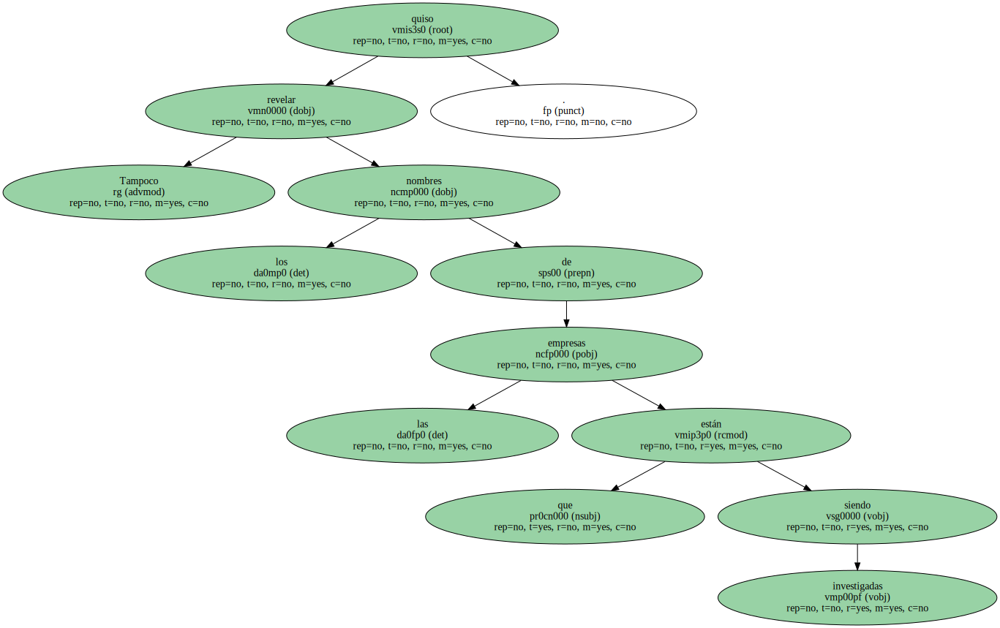" No voy a decir nada porque la investigación está en marcha " , manifestó Wallander.
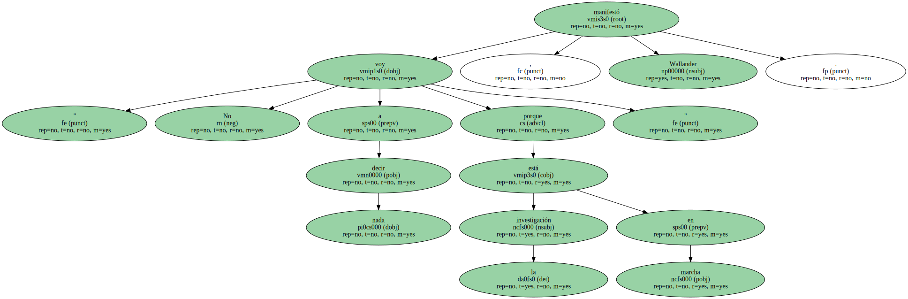Otros periódicos , como el Svenska Dagbladet , han buscado la información en los resúmenes e informes de los juzgados y por éstos se ha sabido que , recientemente , hubo una reunión entre los jefes de la Oficina de Control de la Competencia y los directivos de Shell.
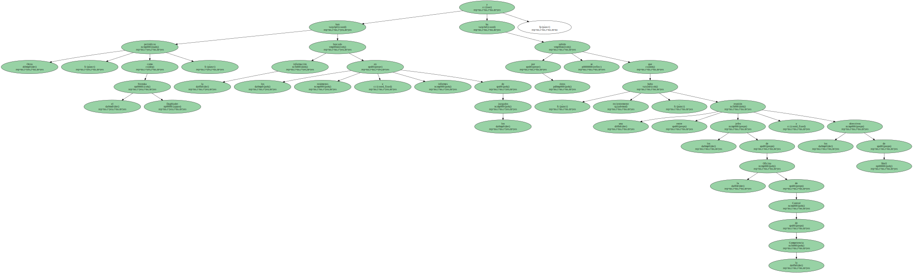Se trata de nuevas sospechas de pactos secretos sobre los precios de las gasolinas y el gasóleo y sobre todos los descuentos que aplican.
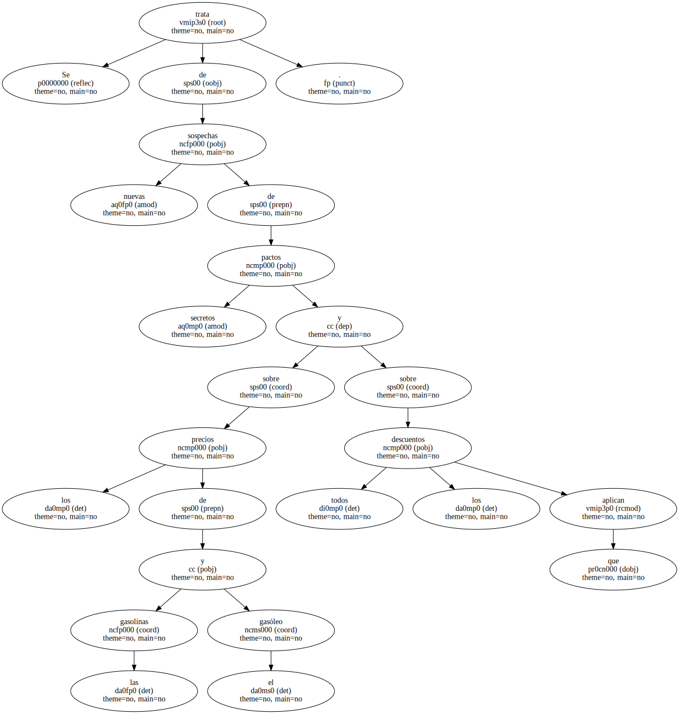Para Wallander , esto es " una tendencia a largo plazo y en todas las direcciones ".
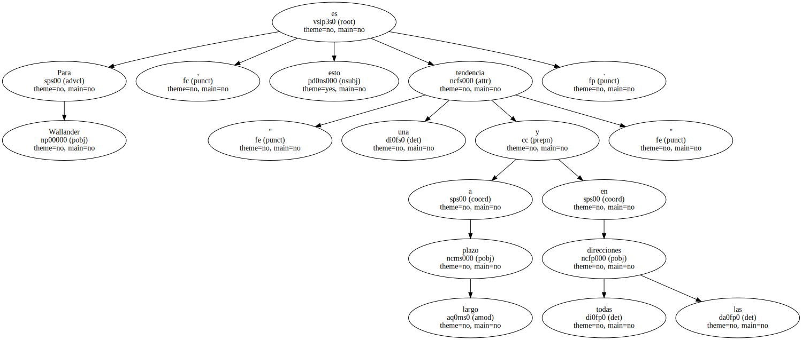Consumidores incrédulos.

Sin embargo , los consumidores suecos miran con cierta incredulidad y sorpresa que estos acuerdos de precios existan entre las empresas de su país.
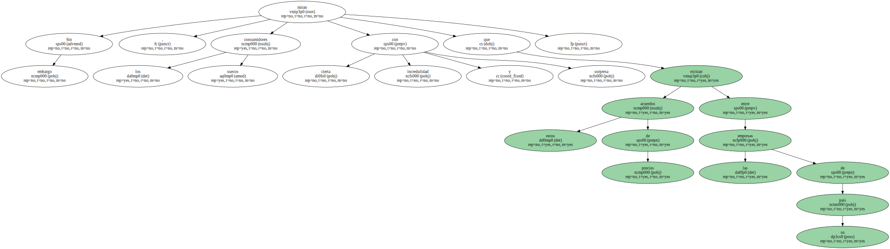Acostumbrados a una transparencia casi total en todo tipo de asuntos , el consumidor medio está convencido de que las ilegalidades serán controladas y castigadas por las instituciones suecas , pero también tiene la seguridad de que , termine como termine el asunto , no recibirá ningún dinero de vuelta.
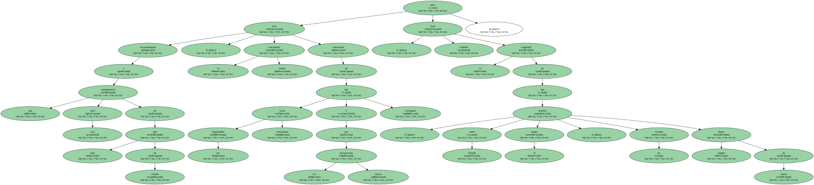Si bien los conductores han pagado unos precios demasiado altos por el combustible , el Estado es el que más tiene que perder por los impuestos y , por tanto , es quien intenta recuperar lo perdido.
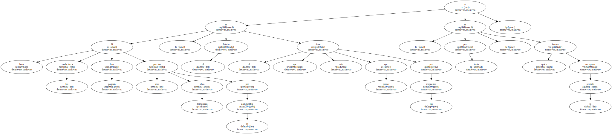